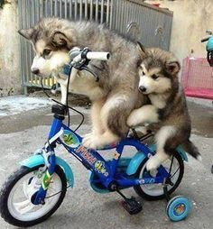

Surprise Website
Pets are the most amazing things ever.
We have all had pets, or wanted to at some point in our lives. Every now and then, animals tend to do the funniest things ever. For example, they ride bikes, they get in the way of bikers at races, etc.
They do all sorts of things that can only be described as being the cutest things ever. It’s funny because they don’t even KNOW that they are doing it half the time.
So here’s what we did.
We took a look all over the internet to find the funniest and cutest, and sometimes the most skilled animals riding bikes or being involved with bikes.
Here are some examples:


Here's some pro's and con's of dogs riding bicycles
Pro's
- Don't need to be walked
- Super cute
- Cool party trick
Con's
- Don't need to be walked :(
- Could ride bike to run away
- Excessive freedom might give them the ability to take over the planet
Click Me